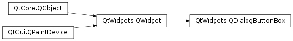

QDialogButtonBox¶
Synopsis¶
Functions¶
- def
addButton(button) - def
addButton(button, role) - def
addButton(text, role) - def
button(which) - def
buttonRole(button) - def
buttons() - def
centerButtons() - def
clear() - def
orientation() - def
removeButton(button) - def
setCenterButtons(center) - def
setOrientation(orientation) - def
setStandardButtons(buttons) - def
standardButton(button) - def
standardButtons()
Signals¶
- def
accepted() - def
clicked(button) - def
helpRequested() - def
rejected()
Detailed Description¶
The
PySide2.QtWidgets.QDialogButtonBoxclass is a widget that presents buttons in a layout that is appropriate to the current widget style.Dialogs and message boxes typically present buttons in a layout that conforms to the interface guidelines for that platform. Invariably, different platforms have different layouts for their dialogs.
PySide2.QtWidgets.QDialogButtonBoxallows a developer to add buttons to it and will automatically use the appropriate layout for the user’s desktop environment.Most buttons for a dialog follow certain roles. Such roles include:
- Accepting or rejecting the dialog.
- Asking for help.
- Performing actions on the dialog itself (such as resetting fields or applying changes).
There can also be alternate ways of dismissing the dialog which may cause destructive results.
Most dialogs have buttons that can almost be considered standard (e.g. OK and Cancel buttons). It is sometimes convenient to create these buttons in a standard way.
There are a couple ways of using
PySide2.QtWidgets.QDialogButtonBox. One ways is to create the buttons (or button texts) yourself and add them to the button box, specifying their role.findButton = QPushButton(self.tr("&Find")) findButton.setDefault(True) moreButton = QPushButton(self.tr("&More")) moreButton.setCheckable(True) moreButton.setAutoDefault(False) buttonBox = QDialogButtonBox(Qt.Vertical) buttonBox.addButton(findButton, QDialogButtonBox.ActionRole) buttonBox.addButton(moreButton, QDialogButtonBox.ActionRole)Alternatively,
PySide2.QtWidgets.QDialogButtonBoxprovides several standard buttons (e.g. OK, Cancel, Save) that you can use. They exist as flags so you can OR them together in the constructor.self.buttonBox = QDialogButtonBox(QDialogButtonBox.Ok | QDialogButtonBox.Cancel) self.buttonBox.accepted.connect(self.accept) self.buttonBox.rejected.connect(self.reject)You can mix and match normal buttons and standard buttons.
Currently the buttons are laid out in the following way if the button box is horizontal:
Button box laid out in horizontal GnomeLayoutButton box laid out in horizontal KdeLayoutButton box laid out in horizontal MacLayoutButton box laid out in horizontal WinLayoutThe buttons are laid out the following way if the button box is vertical:
GnomeLayoutKdeLayoutMacLayoutWinLayoutAdditionally, button boxes that contain only buttons with
ActionRoleorHelpRolecan be considered modeless and have an alternate look on macOS :
modeless horizontal MacLayoutmodeless vertical MacLayoutWhen a button is clicked in the button box, the
PySide2.QtWidgets.QDialogButtonBox.clicked()signal is emitted for the actual button is that is pressed. For convenience, if the button has anAcceptRole,RejectRole, orHelpRole, thePySide2.QtWidgets.QDialogButtonBox.accepted(),PySide2.QtWidgets.QDialogButtonBox.rejected(), orPySide2.QtWidgets.QDialogButtonBox.helpRequested()signals are emitted respectively.If you want a specific button to be default you need to call
QPushButton.setDefault()on it yourself. However, if there is no default button set and to preserve which button is the default button across platforms when using theQPushButton.autoDefaultproperty, the first push button with the accept role is made the default button when thePySide2.QtWidgets.QDialogButtonBoxis shown,


-
class
PySide2.QtWidgets.QDialogButtonBox(buttons[, parent=nullptr])¶ -
class
PySide2.QtWidgets.QDialogButtonBox(buttons, orientation[, parent=nullptr]) -
class
PySide2.QtWidgets.QDialogButtonBox([parent=nullptr]) -
class
PySide2.QtWidgets.QDialogButtonBox(orientation[, parent=nullptr]) Parameters: - buttons –
PySide2.QtWidgets.QDialogButtonBox.StandardButtons - parent –
PySide2.QtWidgets.QWidget - orientation –
PySide2.QtCore.Qt.Orientation
Constructs a horizontal button box with the given
parent, containing the standard buttons specified bybuttons.See also
PySide2.QtWidgets.QDialogButtonBox.orientation()PySide2.QtWidgets.QDialogButtonBox.addButton()Constructs a button box with the given
orientationandparent, containing the standard buttons specified bybuttons.See also
PySide2.QtWidgets.QDialogButtonBox.orientation()PySide2.QtWidgets.QDialogButtonBox.addButton()Constructs an empty, horizontal button box with the given
parent.See also
PySide2.QtWidgets.QDialogButtonBox.orientation()PySide2.QtWidgets.QDialogButtonBox.addButton()Constructs an empty button box with the given
orientationandparent.- buttons –
-
PySide2.QtWidgets.QDialogButtonBox.ButtonRole¶
-
PySide2.QtWidgets.QDialogButtonBox.StandardButton¶ These enums describe flags for standard buttons. Each button has a defined
QDialogButtonBox.ButtonRole.Constant Description QDialogButtonBox.Ok An “OK” button defined with the AcceptRole.QDialogButtonBox.Open An “Open” button defined with the AcceptRole.QDialogButtonBox.Save A “Save” button defined with the AcceptRole.QDialogButtonBox.Cancel A “Cancel” button defined with the RejectRole.QDialogButtonBox.Close A “Close” button defined with the RejectRole.QDialogButtonBox.Discard A “Discard” or “Don’t Save” button, depending on the platform, defined with the DestructiveRole.QDialogButtonBox.Apply An “Apply” button defined with the ApplyRole.QDialogButtonBox.Reset A “Reset” button defined with the ResetRole.QDialogButtonBox.RestoreDefaults A “Restore Defaults” button defined with the ResetRole.QDialogButtonBox.Help A “Help” button defined with the HelpRole.QDialogButtonBox.SaveAll A “Save All” button defined with the AcceptRole.QDialogButtonBox.Yes A “Yes” button defined with the YesRole.QDialogButtonBox.YesToAll A “Yes to All” button defined with the YesRole.QDialogButtonBox.No A “No” button defined with the NoRole.QDialogButtonBox.NoToAll A “No to All” button defined with the NoRole.QDialogButtonBox.Abort An “Abort” button defined with the RejectRole.QDialogButtonBox.Retry A “Retry” button defined with the AcceptRole.QDialogButtonBox.Ignore An “Ignore” button defined with the AcceptRole.QDialogButtonBox.NoButton An invalid button. See also
QDialogButtonBox.ButtonRolePySide2.QtWidgets.QDialogButtonBox.standardButtons()
-
PySide2.QtWidgets.QDialogButtonBox.ButtonLayout¶ This enum describes the layout policy to be used when arranging the buttons contained in the button box.
Constant Description QDialogButtonBox.WinLayout Use a policy appropriate for applications on Windows. QDialogButtonBox.MacLayout Use a policy appropriate for applications on macOS . QDialogButtonBox.KdeLayout Use a policy appropriate for applications on KDE. QDialogButtonBox.GnomeLayout Use a policy appropriate for applications on GNOME. QDialogButtonBox.AndroidLayout Use a policy appropriate for applications on Android. This enum value was added in Qt 5.10. The button layout is specified by the
current style. However, on the X11 platform, it may be influenced by the desktop environment.
-
PySide2.QtWidgets.QDialogButtonBox.accepted()¶
-
PySide2.QtWidgets.QDialogButtonBox.addButton(text, role)¶ Parameters: - text – unicode
- role –
PySide2.QtWidgets.QDialogButtonBox.ButtonRole
Return type: Creates a push button with the given
text, adds it to the button box for the specifiedrole, and returns the corresponding push button. Ifroleis invalid, no button is created, and zero is returned.
-
PySide2.QtWidgets.QDialogButtonBox.addButton(button) Parameters: button – PySide2.QtWidgets.QDialogButtonBox.StandardButtonReturn type: PySide2.QtWidgets.QPushButtonAdds a standard
buttonto the button box if it is valid to do so, and returns a push button. Ifbuttonis invalid, it is not added to the button box, and zero is returned.
-
PySide2.QtWidgets.QDialogButtonBox.addButton(button, role) Parameters: Adds the given
buttonto the button box with the specifiedrole. If the role is invalid, the button is not added.If the button has already been added, it is removed and added again with the new role.
Note
The button box takes ownership of the button.
Parameters: which – PySide2.QtWidgets.QDialogButtonBox.StandardButtonReturn type: PySide2.QtWidgets.QPushButtonReturns the
PySide2.QtWidgets.QPushButtoncorresponding to the standard buttonwhich, or 0 if the standard button doesn’t exist in this button box.
Parameters: button – PySide2.QtWidgets.QAbstractButtonReturn type: PySide2.QtWidgets.QDialogButtonBox.ButtonRoleReturns the button role for the specified
button. This function returnsInvalidRoleifbuttonis 0 or has not been added to the button box.
Return type: Returns a list of all the buttons that have been added to the button box.
-
PySide2.QtWidgets.QDialogButtonBox.centerButtons()¶ Return type: PySide2.QtCore.bool
-
PySide2.QtWidgets.QDialogButtonBox.clear()¶ Clears the button box, deleting all buttons within it.
-
PySide2.QtWidgets.QDialogButtonBox.clicked(button)¶ Parameters: button – PySide2.QtWidgets.QAbstractButton
-
PySide2.QtWidgets.QDialogButtonBox.helpRequested()¶
-
PySide2.QtWidgets.QDialogButtonBox.orientation()¶ Return type: PySide2.QtCore.Qt.Orientation
-
PySide2.QtWidgets.QDialogButtonBox.rejected()¶
-
PySide2.QtWidgets.QDialogButtonBox.removeButton(button)¶ Parameters: button – PySide2.QtWidgets.QAbstractButtonRemoves
buttonfrom the button box without deleting it and sets its parent to zero.
-
PySide2.QtWidgets.QDialogButtonBox.setCenterButtons(center)¶ Parameters: center – PySide2.QtCore.bool
-
PySide2.QtWidgets.QDialogButtonBox.setOrientation(orientation)¶ Parameters: orientation – PySide2.QtCore.Qt.Orientation
-
PySide2.QtWidgets.QDialogButtonBox.setStandardButtons(buttons)¶ Parameters: buttons – PySide2.QtWidgets.QDialogButtonBox.StandardButtons
-
PySide2.QtWidgets.QDialogButtonBox.standardButton(button)¶ Parameters: button – PySide2.QtWidgets.QAbstractButtonReturn type: PySide2.QtWidgets.QDialogButtonBox.StandardButtonReturns the standard button enum value corresponding to the given
button, orNoButtonif the givenbuttonisn’t a standard button.
-
PySide2.QtWidgets.QDialogButtonBox.standardButtons()¶ Return type: PySide2.QtWidgets.QDialogButtonBox.StandardButtons
© 2018 The Qt Company Ltd. Documentation contributions included herein are the copyrights of their respective owners. The documentation provided herein is licensed under the terms of the GNU Free Documentation License version 1.3 as published by the Free Software Foundation. Qt and respective logos are trademarks of The Qt Company Ltd. in Finland and/or other countries worldwide. All other trademarks are property of their respective owners.